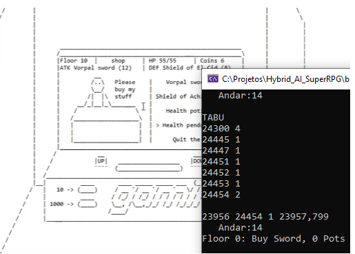
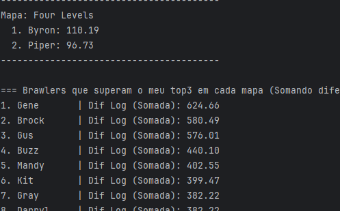
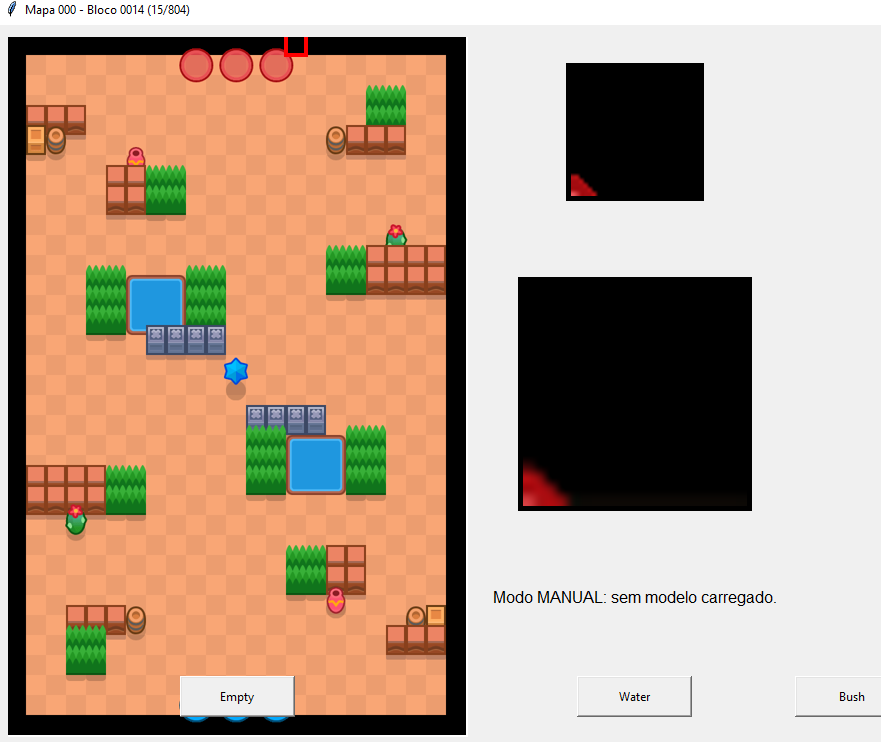
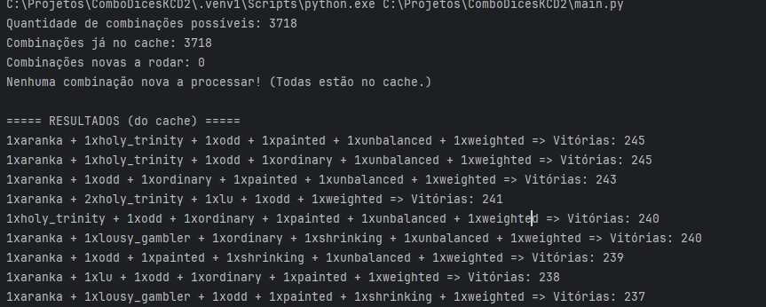

Hybrid AI SuperRpg
Junção de Algoritmo Genético e Pesquisa Tabu na resolução de um jogo de RPG de escolhas, ele usa AG para a parte de exploração maior de resolução e Tabu para movimentos locais mais precisos, para refinar o resultado.
Código no
GitHub

BrawlersStats
Projeto para buscar Brawlers ideais com base no que o Usuário possui no jogo Brawl Stars aplicando modelo linear e logarítmico no WR e PR e comparando com os do jogador em cada mapa.
Código no GitHub

Brawl Mapper
Um sistema de classificação e identificação automática de blocos dos mapas de Brawl Stars, feito com uma NN. O modelo realiza a predição dos blocos e quando a confiança é baixa o usuário pode intervir escolhendo a categoria correta. Esse feedback é incorporado ao treino e ajuda a rede se especializar progressivamente.
Código no GitHub

Combo Dices KCD2
Projeto que busca as melhores combinações de dados modificados no jogo Farkel de KCD2 através de uma disputa entre uma estratégia padrão feita por mim e uma Deep Q-Network.
Código no GitHub